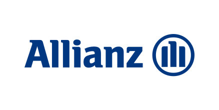
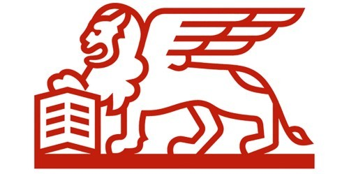

Egy külföldi út akkor nyugodt, ha baj esetén nem ott kell először kitalálni, kihez forduljon, mit térít a biztosítás, és mi marad saját költség. Utasbiztosításnál nem csak a napi díjat nézzük: összevetjük az egészségügyi limiteket, a poggyászfedezetet, az assistance elérhetőséget, a sportkiegészítőket és az útlemondási feltételeket is.
Gyors igényfelmérés, elköteleződés nélkül. Segítünk kiválasztani, melyik csomag illik az úti célhoz és az utazás típusához.
Az Európai Egészségbiztosítási Kártya főként az állami rendszerben és az adott ország szabályai szerint segít. Magánellátás, önrész, hazaszállítás, poggyász vagy assistance esetén különösen fontos lehet az utasbiztosítás.
Más csomag kellhet egy hétvégi városnézésre, családi nyaralásra, síelésre, búvárkodásra vagy üzleti útra. A sport és a kockázatosabb tevékenység sokszor külön feltétel.
Megmutatjuk, hol találja a biztosító 0-24 órás segítségnyújtását, mikor kell előbb telefonálni, és milyen dokumentumokat érdemes megőrizni a kárrendezéshez.
A MNB tájékoztatója szerint az utasbiztosítások nem csak díjban, hanem a vállalt kockázatokban és a szolgáltatási értékhatárokban is eltérnek. Ezért a kérdés nem az, hogy “van-e biztosítás”, hanem hogy az adott utazáshoz jó-e.
Nem hosszú apróbetűs listával kezdünk. Azt nézzük át, amin külföldön tényleg pénz, idő és biztonság múlhat.
Külföldön egy sürgősségi ellátás, kórházi kezelés vagy hazaszállítás költsége gyorsan magas lehet. A limitet és az önrészt nem érdemes a kötés után felfedezni.
A NEAK szerint az EU-kártya és az utasbiztosítás kiegészítő jellegű. Az EU-kártya nem ugyanaz, mint egy teljes utasbiztosítási csomag.
A célország biztonsági besorolása a biztosítási szolgáltatásra is hatással lehet. Indulás előtt érdemes ránézni az aktuális konzuli listára.
A konkrét fedezet mindig a választott biztosítótól és csomagtól függ, de ezek a területek a legtöbb összehasonlításnál előkerülnek.
Külföldi baleset vagy hirtelen betegség esetén a csomag feltételei szerint segíthet.
Nem mindegy, mi számít poggyásznak, mennyi a limit, és milyen igazolás kell a kárrendezéshez.
Bizonyos csomagok az út körüli kellemetlen helyzetekre is adhatnak térítést vagy segítséget.
Kattintson a kártyára, mobilon koppintson.
Sokan azt hiszik, az EU-kártya minden külföldi egészségügyi költséget rendez.
Elmondjuk, mire jó az EU-kártya, és mely helyzeteknél kellhet külön utasbiztosítás.
Síelés, búvárkodás vagy vadvízi program sokszor nem alapfedezet.
Az utazás programja alapján nézzük meg, kell-e sport- vagy extrém sport kiegészítő.
Laptop, kamera, sporteszköz vagy készpénz nem mindig ugyanúgy térül.
Nem csak azt nézzük, van-e poggyászfedezet, hanem azt is, milyen tárgyra mennyi a keret.
Külföldön nem mindegy, mikor kell a biztosító assistance vonalát keresni.
Kötés után tudni fogja, hol van az assistance szám, és milyen adatokat készítsen elő.
Küldje el az úti célt, az időtartamot és a tervezett programokat. Visszahívjuk, és érthetően elmondjuk, melyik csomagnál mire kell figyelni.
Az Európai Egészségbiztosítási Kártya fontos alap, de nem fed le minden utazási helyzetet. A NEAK tájékoztatása szerint csak meghatározott ellátásokra és feltételekkel használható, míg az utasbiztosítás a szerződésben szereplő szolgáltatásokra téríthet.
Egy tengerparti pihenés, egy síút és egy konferenciaút kockázata nem ugyanaz. Az MNB is kiemeli, hogy érdemes végiggondolni az úti célt, az utazás időtartamát, a közlekedési módot, az egészségi állapotot és az utazás típusát.
Ezek apróságnak tűnnek, de kárnál sok időt spórolhatnak.
Kerülje ki a fákat és köveket, menjen át a zászlókapukon, majd érjen célba. A játék közben is az a tanulság: síeléshez a téli sport fedezetet külön érdemes ellenőrizni.
A célbaéréshez kerülje az akadályokat, a kapukért pedig plusz pont jár. Három védelmi pontja van.
0 / 0 kapu
Síút előtti mini emlékeztető
A téli sport, helikopteres mentés, pályán kívüli síelés vagy nagyobb sportfelszerelés nem mindig alapfedezet.
Utasbiztosításnál nem csak az ár számít, hanem a célország, a program és a limitek is.
5 utasbiztosítási tévhit – nézzük, mi igaz belőlük.
Amit ajánlatkérés előtt érdemes tisztázni.
Négy külső forrás, amely segít felelősen dönteni utazás előtt.
Biztosítói partnereink közül keressük az utazáshoz illeszkedő megoldást


Utasbiztosítás mellé ezek is érdekesek lehetnek: